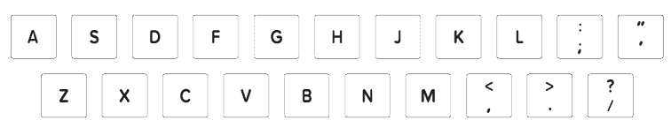

Bandura
A ideia, programação:
Ukrzen Team
Gravando musica:
Anastasia Voitjuk
Sons Bandura:
Taras Silenko
Fotos Bandura:
Julian Hayda
Bandura:
Julianne Kitastiy
Сom apoio:
Junte-se a nós:
Bandura
A Bandura é um instrumento musical típico ucraniano, muito utilizado na música folk do país. O instrumento combina características da cítara e do alaúde, assim como a kobza.
É só tocar nas cordas e soltar sua vocação musical.
